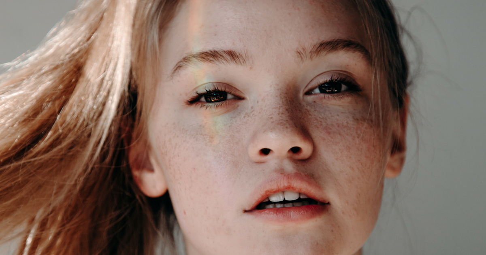

မျက်နှာလေးယားယံနေသလား

ဘာကြောင့်မှန်းမသိဘဲ ရုတ်တရက်မျက်နှာက ယားယံမှုခံစားဖူးပါသလား၊ ကြုံခဲ့ဖူးသူဆို ဒါဟာဘယ်လောက် နေရခက်သလဲဆိုတာ သိနိုင်ပါတယ်။ ဘာကြောင့် ရုတ်တရက်ကြီး မျက်နှာက ယားယံရတာလဲ၊ စိုးရိမ်ရသလား၊ မဖြစ်အောင် ဘယ်လိုကာကွယ်ရမလဲ ဆိုတာ တစ်ချက်လောက် လေ့လာကြည့်ရအောင်ပါ။
.
.
.
အများအားဖြင့် မျက်နှာယားယံရတာက မျက်နှာအရေပြားခြောက်သွေ့လို့၊ ဓာတ်မတည့်တဲ့အရာ တစ်ခုခုနဲ့ထိတွေ့မိလို့နဲ့ ရာသီဥတုတို့ကြောင့် ဖြစ်ပါတယ်။ ဒ့ါအပြင် ကိုယ်သောက်လိုက်တဲ့ ပိုးသတ်ဆေး၊ မှိုသတ်ဆေး တချို့ရဲ့ ဘေးထွက်ဆိုးကျိုးကြောင့်လည်း မျက်နှာ ယားယံတတ်ပါသေးတယ်။ အဖြစ်နည်းပေမဲ့ တစ်ခါတလေမှာတော့ ကိုယ်တွင်းပြဿနာတစ်ခုခု (အသည်းရောဂါ၊ လည်ပင်းသိုင်းရွိုက်ရောဂါ၊ ကင်ဆာရောဂါ စတဲ့)ကြောင့် သော်လည်းကောင်း၊ အာဟာရဓာတ်ချို့တဲ့မှုကြောင့် သော်လည်းကောင်း မျက်နှာယားယံတတ်ပါသေးတယ်။
အခု အောက်ပါ ဖော်ပြပေးသွားမှာကတော့ အဖြစ်များတဲ့ မျက်နှာယားယံရတဲ့ အကြောင်းတွေ ဖြစ်ပါတယ်။
မျက်နှာက ယားလည်းယားမယ်၊ အနီကွက်လည်းထမယ်
မျက်နှာက ယားရုံတင်မကပဲ အင်ပြင်တွေ၊ အနီကွက်တွေပါထွက်လာမယ်ဆိုရင် ဒါဟာ တစ်ခုခုနဲ့ ဓာတ်မတည့်လို့ဖြစ်တာလို့ ယူဆနိုင်ပါတယ်။ ကိုယ့်ရဲ့အရေပြားက သူနဲ့ဓာတ်မတည့်တဲ့ အရာတစ်ခုနဲ့ ထိတွေ့လိုက်တဲ့အခါ ပြန်တုန့်ပြန်တဲ့အနေနဲ့ ဒီလိုတွေဖြစ်လာတာဖြစ်ပါတယ်။ အများအားဖြင့် ဓာတုဒြပ်ပေါင်းတွေ၊ ဆပ်ပြာရည်တွေ၊ အစားအစာတွေကြောင့် ဖြစ်တာကို တွေ့ရတတ်ပါတယ်။
မျက်နှာက ယားပေမဲ့ အနီကွက် မထွက်ဘူး
ဒါကတော့ နည်းနည်းပြောရခက်ပါတယ်။ တခြားလက္ခဏာတွေပါ ထပ်ကြည့်ဖို့ လိုအပ်ပါတယ်။
မျက်နှာက အနီကွက်၊ အင်ပြင်မထပဲ ယားမယ်၊ ဒါ့အပြင် အသက်ရှူရပါခက်မယ်၊ မျက်လုံးကလည်း အဝါရောင် သန်းနေမယ်၊ ခန္ဓာကိုယ်ကပြန်ရည်ကြောအကျိတ်တွေကြီးလာမယ်၊ ရေဓာတ်လည်းဆုံးရှုံးမယ် ဒါတွေပါဖြစ်လာမယ်ဆိုရင် နီးစပ်ရာ ဆရာဝန်ဆီ အမြန် သွားရောက်ပြသပါ။ ဒီလက္ခဏာတွေကို အသည်းပြဿနာ၊ အသည်းရောင်အသားဝါ ပြဿနာရှိသူတွေမှာ တွေ့ရတတ်လို့ဖြစ်ပါတယ်။
တခြားတစ်ဖက်မှာလည်း မျက်နှာယားရုံပဲ၊ ဘာအင်ပြင်မထ၊ ဘာလက္ခဏာမှထပ်မပြဘူးဆိုရင်
သံဓာတ်ချို့တဲ့နေတာကြောင့်လည်း ဖြစ်နိုင်ပါတယ်
ကိုယ့်ပတ်ဝန်းကျင်က အရာတစ်ခုခုကို ကိုယ်သတိမထားမိဘဲ ဓာတ်မတည့်မှု ဖြစ်နေတာကြောင့် ဖြစ်နိုင်ပါတယ်။
မျက်နှာအရေပြား ခြောက်သွေ့နေတာကြောင့် ဖြစ်နိုင်ပါတယ်။
ကိုယ်သုံးနေတဲ့ ရေချိုးရေနဲ့ အဆင်မပြေတာကြောင့်လည်း ဖြစ်နိုင်ပါတယ်။
မျက်နှာက ယားပြီးဝက်ခြံတွေလည်း ထွက်မယ်
ဝက်ခြံတွေကိုယ်တိုင်ကိုက တစ်ခါတလေ ယားယံမှုကို ဖြစ်စေပါတယ်။ ယားတဲ့အခါ မျက်နှာကို ကုတ်မိစေတယ်၊ ဒီအခါကုတ်တဲ့လက်က မသန့်ရင် ဝက်ခြံတွေ ပိုပွားသွားပါတယ်။ ချွေးထွက်များတာ၊ သုံးတဲ့အလှကုန် အဆင်မပြေရင်၊ ချွေးပေါက်တွေ ပိတ်ကုန်တာနဲ့ ဟော်မုန်းအထွက်များတာတွေကြောင့် ဝက်ခြံတွေထွက်တတ်ပါတယ်။
ဝက်ခြံပြဿနာကိုတော့ Asthetic Clinic တွေလို့ခေါ်တဲ့ အလှအပရေးရာ ဆေးရုံ၊ ဆေးခန်းတွေမှာပြပြီးကုသမှု ခံယူနိုင်ပါတယ်။ ဖြစ်တဲ့ ဝက်ခြံအမျိုးအစားပေါ် မူတည်ပြီး ညှစ်ထုတ်ပစ်တာ၊ ဆေးလိမ်းတာ၊ လေဆာပစ်တာ၊ အပေါ်ယံအရေပြားကို စားပစ်တာ စတဲ့နည်းတွေနဲ့ ကုသနိုင်ပါတယ်။
ကိုယ်ဝန်ဆောင်မှာ မျက်နှာယားယံတာလား
ဒါလည်းရှားတော့ ရှားပေမဲ့ဖြစ်တတ်ပါတယ်။ ကိုယ်ခန္ဓာနဲ့ အထူးသဖြင့် ဝမ်းဗိုက်မှာယားယံတာက ကိုယ်ဝန်ဆောင်ချိန်မှာ ဖြစ်လေ့ရှိပေမဲ့ မျက်နှာမှာ ယားယံတာကတော့ သိပ်မြင်တွေ့ရလေ့မရှိပါဘူး။ ကိုယ်ဝန်ဆောင်တွေမျက်နှာနဲ့ ခြေလက်တွေ အလွန်အမင်းယားယံလာခြင်းက အသည်းပြဿနာကြောင့် ဖြစ်လေ့ရှိပါတယ်။ အင်ပြင်တွေ အနီကွက်တွေနဲ့တွဲဖြစ်လေ့မရှိဘူး။ မျက်နှာယားယံတာအပြင် ဆီးအရောင်ရင့်တာ၊ ဝမ်းဖျော့ဖျော့သွားတာတွေပါ ဖြစ်တတ်ပါတယ်။ များသောအားဖြင့် ကိုယ်ဝန်ပတ် ၃၀ လောက်မှာ တွေ့ရလေ့ရှိပါတယ်။ ဆရာဝန်နဲ့ပြသဖို့ လိုအပ်ပါတယ်။
အာရုံကြော ပြဿနာကြောင့် ယားယံတာလား
မျက်နှာမှာရှိတဲ့ အာရုံကြောတွေက ပြင်ပက အရာတစ်ခုခုကိုတုန့်ပြန်တဲ့အနေနဲ့လည်း ယားယံမှုကို ဖြစ်စေတတ်ပါတယ်။ တစ်ခါတလေမှာတော့ ခုခံအားနဲ့ သက်ဆိုင်တဲ့ အခြေအနေကြောင့်လည်း ဖြစ်တတ်တာကို တွေ့ရပါတယ်။
ဘယ်လိုကုသကြမလဲ
ဖြစ်တဲ့အကြောင်းပေါ် မူတည်ပြီးတော့ ကုသမှုလည်း ကွဲပြားမှာ ဖြစ်ပါတယ်။ အရင်ဆုံးတော့ သင့်မျက်နှာကို မကုတ်မိဖို့ အကြံပေးမှာ ဖြစ်ပါတယ်။ ဘာကြောင့်လဲဆိုတော့ ဒီလိုကုတ်ခြင်းအားဖြင့် အရေပြားအပေါ်ယံအလွှွာကို ရောင်ရမ်းစေပြီး ပိုဆိုးစေလို့ ဖြစ်ပါတယ်။ ပိုဆိုးရင်တော့ အရေပြားစုတ်ပြဲသွားပြီး ပိုးဝင်သွားနိုင်ပါတယ်။
ကိုယ့်ဖာသာအိမ်မှာပြုလုပ်နိုင်တာတွေကတော့-
ယားယံလာတာနဲ့ အဝတ်စတစ်ခုကို ရေအေးနဲ့ဆွတ်ပြီး မျက်နှာပေါ် တင်ထားလိုက်ပါ၊ ယားတာ သက်သာသွားပါလိမ့်မယ်။
ဘာဆပ်ပြာမှမသုံးဘဲ မျက်နှာကို ရေအေးအေးလေးနဲ့ ဆေးကြောလိုက်ပါ။
စိတ်ဖိစီးမှုတွေ များနေသလား ကိုယ့်ကိုကိုယ် ပြန်ဆန်းစစ်ပါ၊ စိတ်ဖိစီးမှုက ယားယံမှုကို ပိုဆိုးစေပါတယ်။
ဆရာဝန်ရဲ့ ညွှန်ကြားချက်မလိုဘဲ အပြင်မှာ မေးဝယ်လို့ရတဲ့ ဓာတ်မတည်တဲ့အခါလိမ်းတဲ့ လိမ်းဆေးခရင်မ် မေးဝယ်ပါ။ မျက်နှာပေါ်အသုံးပြုလို့ ရ၊ မရ သေချာမေးဝယ်ပါ။ မျက်နှာအရေပြားက ခန္ဓာကိုယ်က တခြားနေရာတွေထပ် ပိုနူးညံ့တာကြောင့် ဆေးတိုင်းသုံးလို့ မရပါဘူး။ ဆေးသုံးလိုက်ပြီးမှ ပိုဆိုးလာတယ်ဆိုရင် ချက်ချင်းရပ်လိုက်ပါ။
ဘယ်လို ကာကွယ်မလဲ
အခြေခံအကျဆုံး အချက်တွေကစပြောရရင်
ရေဓာတ်ခန်းခြောက်မှု မဖြစ်အောင် ရေများများသောက်ပေးပါ။
မျက်နှာသစ်ခရင်မ်ကို ကိုယ်နဲ့အဆင်ပြေမယ့်ဟာပဲ သေချာရွေးသုံးပါ။
မျက်နှာအတွက် အစိုဓာတ်ထိန်းခရင်မ် သုံးမယ်ဆိုရင် ချွေးပေါက်တွေမပိတ်မယ့် အမျိုးအစားကို သေချာရွေးသုံးပေးပါ။ ကိုယ့်အရေပြားနဲ့ တည့်ဖို့လည်း လိုအပ်ပါသေးတယ်။
မျက်နှာမှာလိမ်းမယ့် အလှအပပစ္စည်းတွေကို သေချာရွေးချယ်ပါ၊ သူများတွေသုံးပြီးအဆင်ပြေတိုင်း ကိုယ်နဲ့အဆင်ပြေချင်မှ ပြေမှာဖြစ်ပါတယ်။ နာမည်ကြီးတိုင်း၊ ဈေးကြီးတိုင်းလည်း ကိုယ်နဲ့ အဆင်ပြေမှသုံးပါ။ အလှကုန်ပစ္စည်းတွေကိုလည်း မသုံးခင် သက်တမ်းကုန်ရက်ကို သေချာကြည့်ပါ။ ဝယ်ပြီး ၆လ ၁နှစ်လောက်မသုံးဖြစ်တဲ့ပစ္စည်းတွေကို ပြန်ဖောက်မသုံးပါနဲ့။ အေးတဲ့ရာသီဥတုမှာဆို မျက်နှာအရေပြား မခြောက်သွေ့အောင် အစိုဓာတ်ထိန်းပေးပါ။
တကယ်လို့ ကိုယ့်မျက်နှာအရေပြားယားယံတာက ၂ ပတ်ကျော်တဲ့အထိ မပျောက်ဘူး ဖြစ်နေတယ်၊ ယားယံတာတင်မကပဲ အသက်ရှူကြပ်တာ၊ ပင်ပန်းနွမ်းနယ်တာ၊ ဖျားနာတာတွေပါ တွဲဖြစ်တယ်၊ နောက်ပြီး တစ်နေကုန် ဘာမှမလုပ်နိုင်လောက်အောင် ယားယံနေတယ်ဆိုရင်တော့ ဆရာဝန်နဲ့ ပြသကြည့်သင့်ပါပြီ။ သင့်ဆရာဝန်အနေနဲ့ သောက်ဆေး၊ လိမ်းဆေးပေးတာ၊ စိတ်ဖိစီးမှု လျှော့ချခိုင်းတာတွေ ပြုလုပ်ခိုင်းနိုင်ပြီး စမ်းသပ်စစ်ဆေးမှုအနေနဲ့ လိုအပ်ရင် ဓာတ်မှန်ရိုက်တာ၊ အသားစနမူနာယူတာတွေအထိ ပြုလုပ်နိုင်ပါတယ်။ ဖြစ်တဲ့အကြောင်းကို သေချာသိမှ ကုသမှုကို ဆက်လုပ်နိုင်မှာမို့ ဖြစ်ပါတယ်။
Source-Dr. Barry